Créer un compte et se connecter
Chaque personne a un compte avec un profil. Le profil décide des menus que vous voyez en haut de l'écran.
1Ouvrir l'application
Allez sur https://2.25.123.162.sslip.io. Sans compte, vous pouvez déjà consulter les menus du jour, la carte et les menus des nutritionnistes.
Sur téléphone, ajoutez la page à l'écran d'accueil (menu du navigateur, puis « Ajouter à l'écran d'accueil ») pour l'ouvrir comme une application.
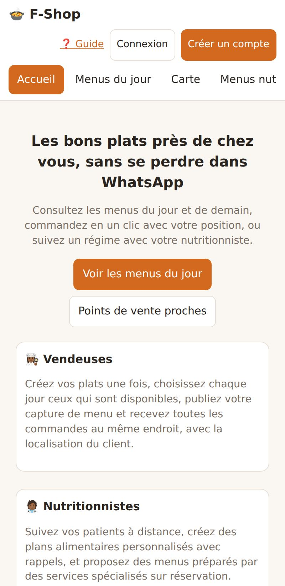
2Créer son compte
Touchez « Créer un compte », choisissez votre profil, puis indiquez votre nom, votre numéro WhatsApp, votre email et un mot de passe d'au moins 6 caractères.
- Client / patient : pour commander, réserver et être suivi par un nutritionniste.
- Vendeuse / restauratrice : pour publier ses menus et recevoir les commandes.
- Nutritionniste et service spécialisé : pour le suivi des patients et la préparation des menus diététiques.
Ensuite, reconnectez-vous avec « Connexion » (email et mot de passe).
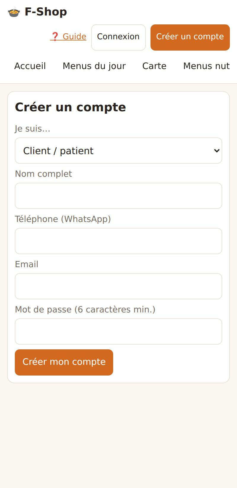
3Comptes de démonstration
Pour essayer sans rien créer, utilisez un de ces comptes. Le mot de passe est demo123 pour tous.
| Profil | |
|---|---|
client@demo.cm | Client / patient |
rose@demo.cm | Vendeuse (Chez Maman Rose) |
nutri@demo.cm | Nutritionniste |
cuisine@demo.cm | Service spécialisé |
Ces comptes sont publics. Ils seront supprimés avant l'ouverture aux vrais utilisateurs.
Client : trouver un plat et commander
ClientVoir ce qui est disponible aujourd'hui ou demain, commander en livraison ou à emporter, et suivre sa commande.
1Voir les menus du jour
Dans Menus du jour, chaque point de vente affiche son message du jour et les plats disponibles, avec le prix et le nombre de portions restantes.
- « Aujourd'hui » ou « Demain » pour changer de jour.
- « Trier par proximité » pour voir d'abord les points de vente les plus proches (la distance s'affiche en km).
- Touchez une photo pour l'agrandir.
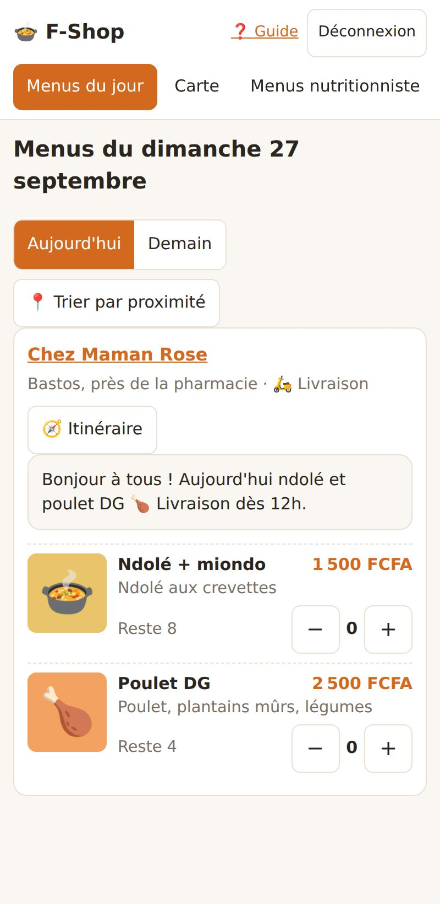
2Remplir son panier
Utilisez les boutons + et − à côté de chaque plat. La barre noire en bas indique le nombre de plats et le total. Touchez Commander.
Un panier ne contient que des plats d'un seul point de vente et d'un seul jour.
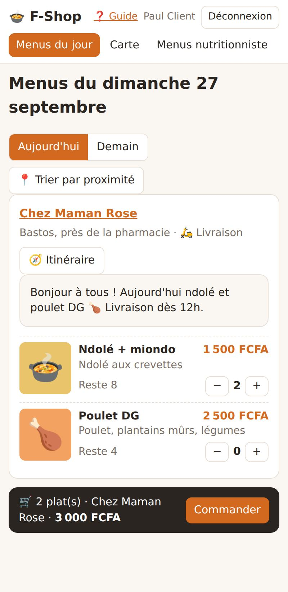
3Valider : livraison ou retrait
Choisissez le mode :
- Livraison : touchez « Utiliser ma position actuelle ». Vous pouvez aussi toucher la carte pour placer le point de livraison, puis ajouter un repère (quartier, couleur du portail…).
- Je passe récupérer / manger sur place : pas besoin de position.
Vérifiez le téléphone, ajoutez une note si besoin (« sans piment »), puis Confirmer la commande.
Le navigateur demande l'autorisation d'accéder à votre position : répondez « Autoriser ». La vendeuse reçoit alors le point exact et l'itinéraire.
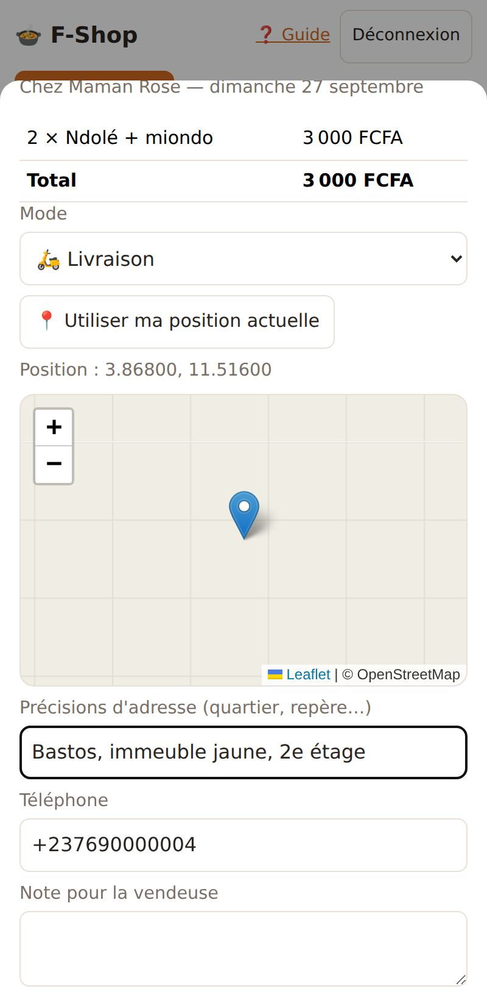
4Suivre ses commandes
Mes commandes affiche chaque commande avec son statut, mis à jour par la vendeuse :
Tant qu'elle est « En attente », vous pouvez l'annuler. Pour un retrait, le bouton « M'y rendre » ouvre l'itinéraire.
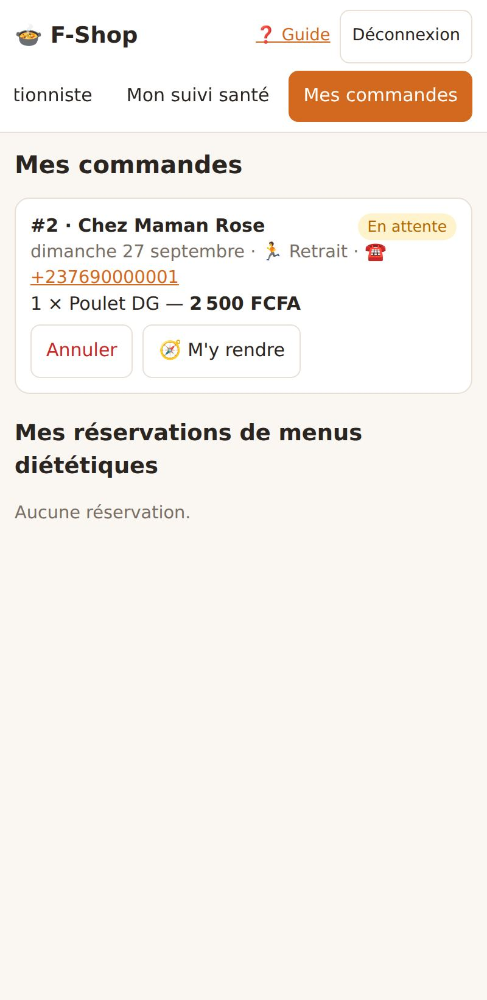
5Trouver un point de vente sur la carte
Dans Carte, touchez « Me localiser » : les points de vente proches apparaissent avec le nombre de plats du jour. Touchez un point de vente pour voir son menu, son téléphone et le bouton M'y rendre.
Sur ces captures, le fond de carte est simplifié. Dans l'application, la carte affiche les rues (OpenStreetMap).
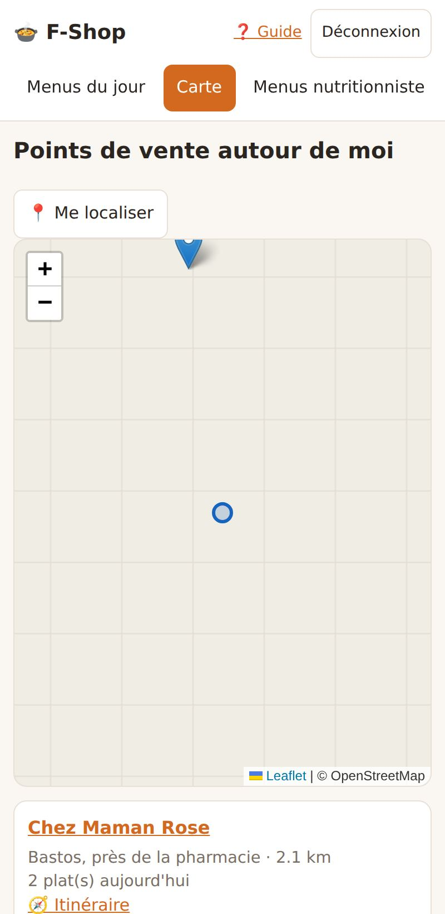
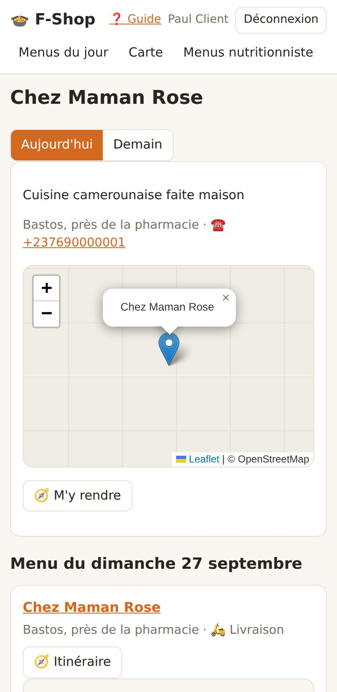
6Réserver un menu de nutritionniste
L'onglet Menus nutritionniste présente des menus équilibrés (diabète, hypertension…), préparés par un service spécialisé. Ils se prennent sur réservation, avec un nombre de places limité.
Touchez Réserver, indiquez le nombre de portions, le mode (retrait ou livraison) et vos allergies éventuelles.
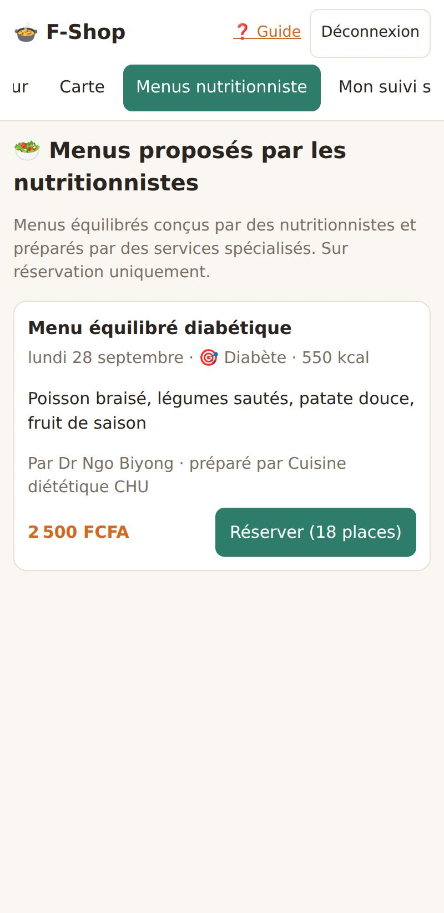
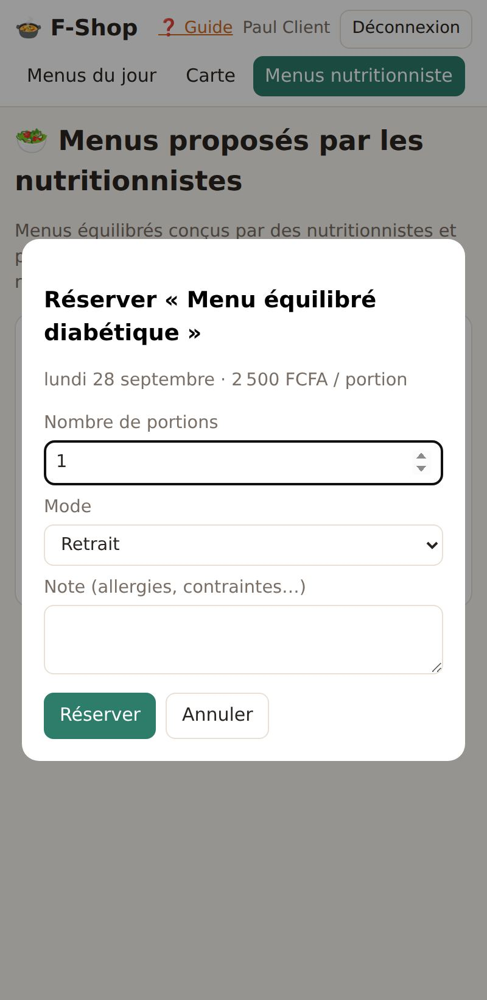
Patient : mon suivi santé
Client suiviSi un nutritionniste vous suit, l'onglet Mon suivi santé regroupe votre plan, vos rappels, vos consultations et vos messages.
1Consulter son plan alimentaire
Le plan indique, pour chaque repas, le jour, l'heure et le contenu conseillé, avec les recommandations générales de votre nutritionniste.
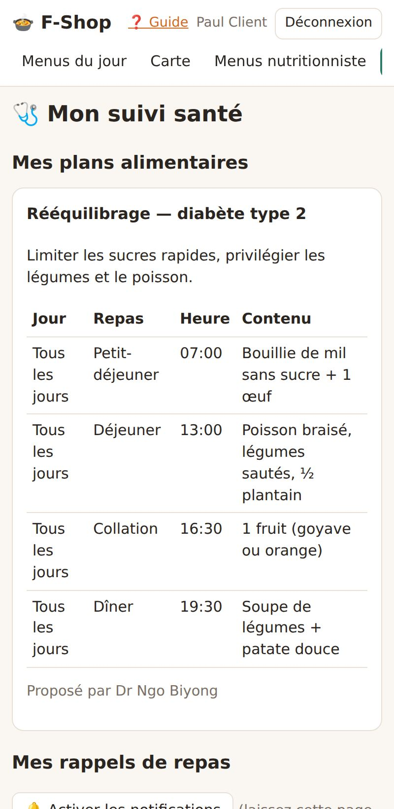
2Régler ses rappels de repas
Les rappels sont créés par le nutritionniste, mais vous pouvez les adapter : changer l'heure ou le texte, choisir les jours, les désactiver, en ajouter. Touchez Enregistrer après chaque modification.
Touchez « Activer les notifications » et gardez l'application ouverte (même en arrière-plan) pour recevoir les rappels à l'heure.
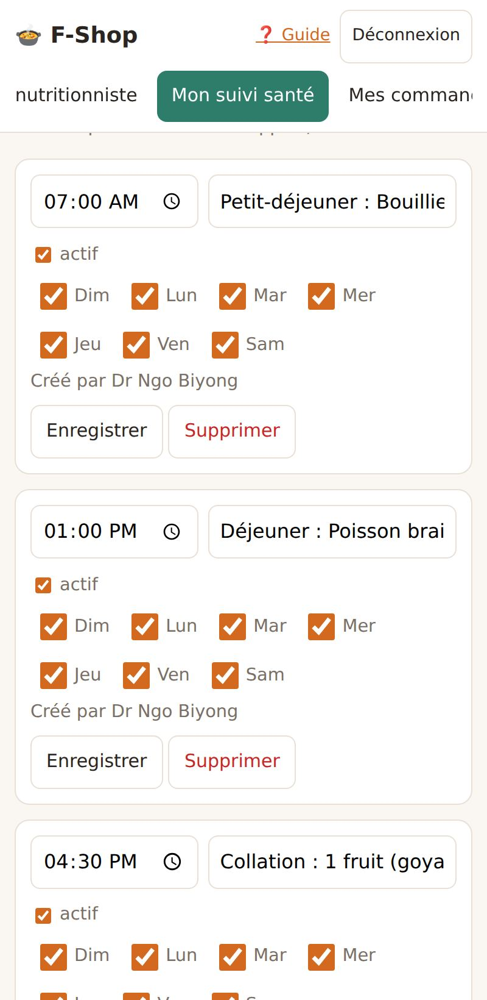
3Demander une consultation à distance
Choisissez le nutritionniste, la date et l'heure souhaitées, et le mode (vidéo, téléphone, messagerie ou présentiel). Ajoutez le motif, puis Envoyer la demande.
Quand le nutritionniste confirme, un bouton Rejoindre la consultation apparaît pour la vidéo. Plus bas, la messagerie permet d'échanger avec lui.
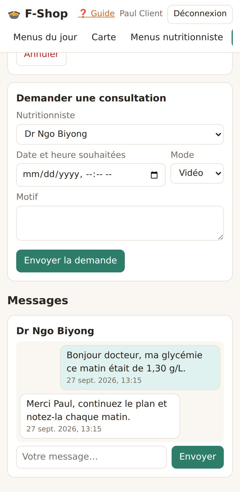
Vendeuse : publier ses menus et gérer ses commandes
VendeuseFini les commandes perdues dans la discussion WhatsApp : tout arrive sur une seule page, avec la position du client.
1Créer son point de vente
Dans Mon point de vente, indiquez le nom, une description, le quartier et le téléphone. Cochez « Je propose la livraison » si c'est le cas.
Placez votre point de vente sur la carte : « Utiliser ma position » si vous y êtes, ou touchez la carte à l'endroit exact. C'est ce point que les clients verront.
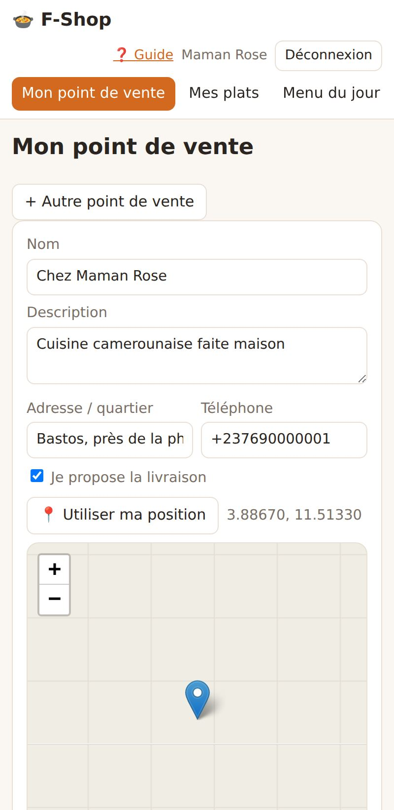
2Créer ses plats une seule fois
Dans Mes plats, ajoutez chaque plat que vous savez préparer : nom, prix en FCFA, description et photo. Vous n'aurez plus à les ressaisir : chaque jour, il suffira de cocher ceux du jour.
« Modifier » change le prix ou la photo ; « Retirer » enlève un plat du catalogue sans effacer les anciennes commandes.
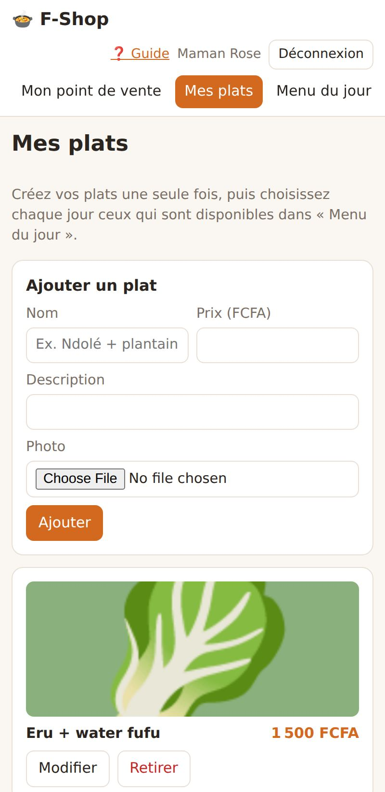
3Choisir le menu du jour
Dans Menu du jour, choisissez le jour (aujourd'hui, demain ou une date), cochez les plats disponibles, puis Publier la sélection.
- Portions : indiquez combien vous en avez préparé. Quand tout est vendu, les commandes s'arrêtent seules. Laissez vide pour ne pas limiter.
- Reprendre le menu de la veille recopie la sélection d'hier en un geste.
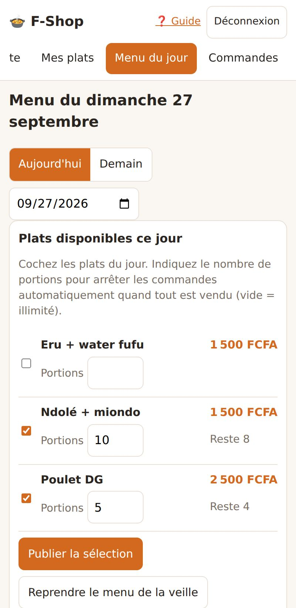
4Publier un message ou une capture
Sur la même page, écrivez un message (« Livraison dès 12h ! ») et ajoutez si vous voulez une photo ou la capture d'écran de votre menu, comme sur WhatsApp. Elle s'affiche en haut de votre menu chez les clients.
« Voir comme un client » montre exactement ce que vos clients voient.
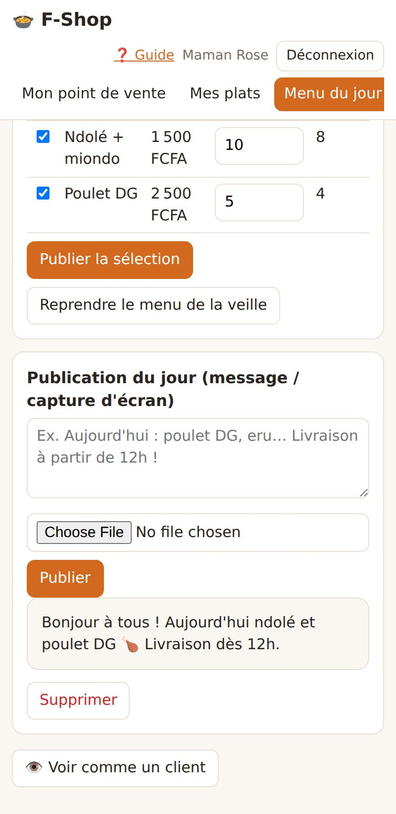
5Traiter les commandes
Commandes affiche en haut le nombre de commandes, le total et le nombre de portions par plat. La page vérifie seule les nouvelles commandes toutes les 30 secondes.
Chaque commande donne le nom du client, les plats, la note, son téléphone (appel ou WhatsApp) et, pour une livraison, Voir la position et Itinéraire. Un bouton fait avancer la commande d'une étape :
Filtrez par date ou par statut ; « Toutes dates » affiche l'historique.
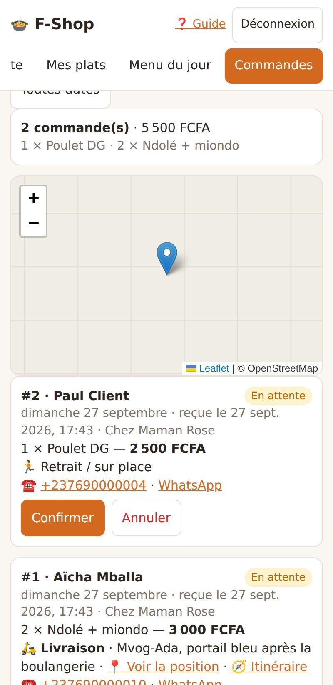
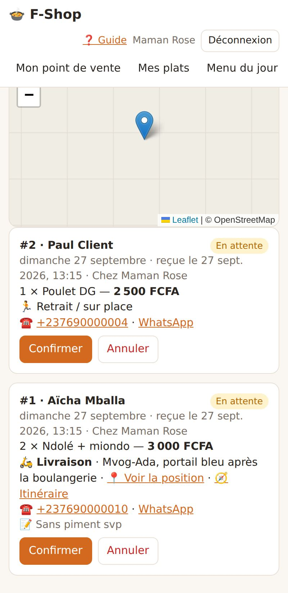
Nutritionniste : suivre ses patients à distance
NutritionnistePlans personnalisés, rappels, consultations et menus sur réservation, sans tout suivre à la main.
1Ajouter ses patients
Dans Patients, saisissez l'email du compte du patient puis Ajouter. Le patient doit d'abord avoir créé un compte client. Un patient qui vous demande une consultation est ajouté automatiquement.
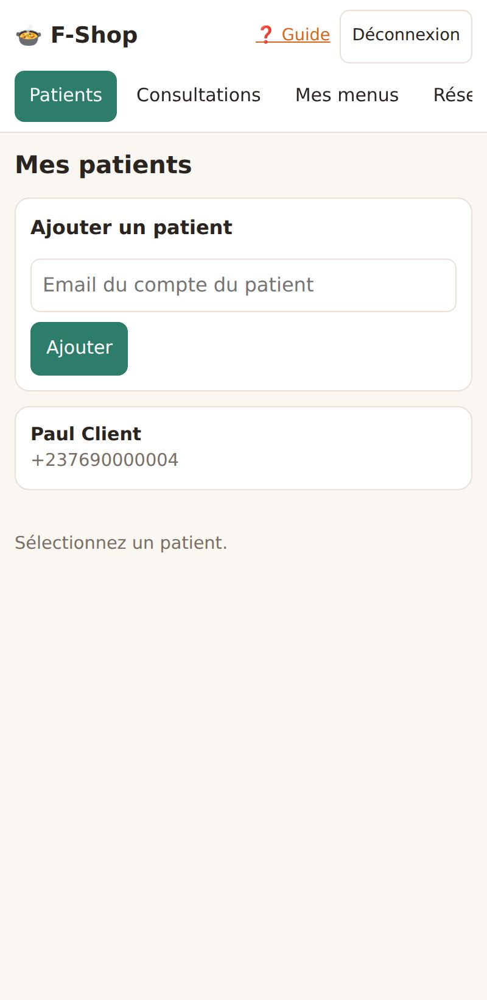
2Ouvrir la fiche d'un patient
Touchez un patient pour voir ses coordonnées, vos notes de suivi (visibles de vous seul) et ses plans alimentaires. De là, vous pouvez aussi planifier une consultation.
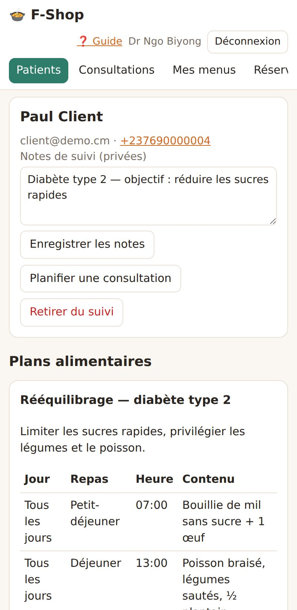
3Créer un plan personnalisé
Donnez un titre et des dates, puis remplissez les repas : jour (ou tous les jours), repas, heure et contenu. « Ajouter un repas » crée une ligne de plus.
Laissez cochée Créer les rappels de prise de repas : chaque repas avec une heure devient un rappel chez le patient.
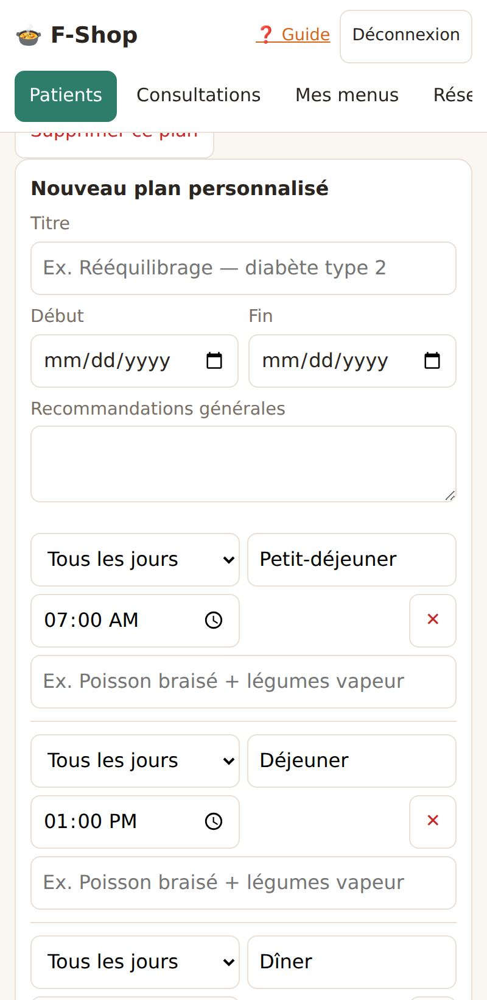
4Ajuster les rappels et échanger
Sous le plan, vous voyez et modifiez les rappels du patient, comme lui. Plus bas, la messagerie permet d'échanger (glycémie du matin, questions sur le plan…).
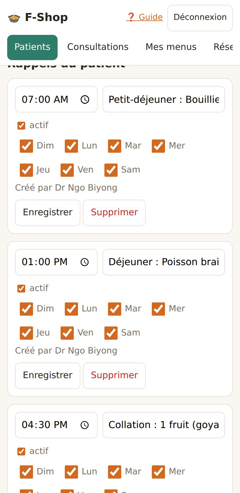
5Gérer les consultations
Dans Consultations, planifiez un rendez-vous ou traitez les demandes des patients. Pour une vidéo sans lien, un lien Jitsi (gratuit, sans installation) est créé quand vous confirmez.
Après la consultation, rédigez le compte rendu et marquez-la « Terminée » : le patient le retrouve dans son espace.
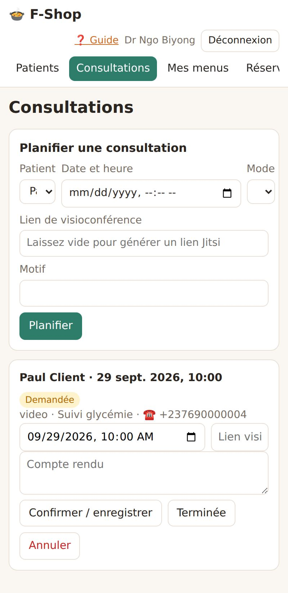
6Proposer des menus sur réservation
Dans Mes menus, décrivez le menu (composition, public cible, calories), fixez le prix, la date de service et le nombre de places, puis choisissez le service qui le prépare. Il apparaît aussitôt dans l'onglet « Menus nutritionniste » des clients.
Réservations liste qui a réservé quoi.
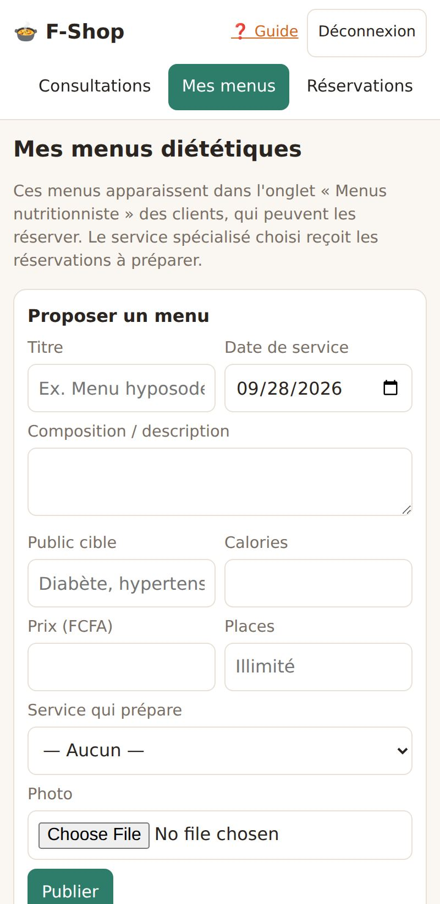
Service spécialisé : préparer les réservations
CuisineLa cuisine qui prépare les menus diététiques voit uniquement les réservations qui la concernent.
1Suivre et préparer
Réservations à préparer affiche pour chaque réservation le menu, le jour, le nombre de portions, le client, son téléphone, le mode (retrait ou livraison avec position) et les allergies signalées.
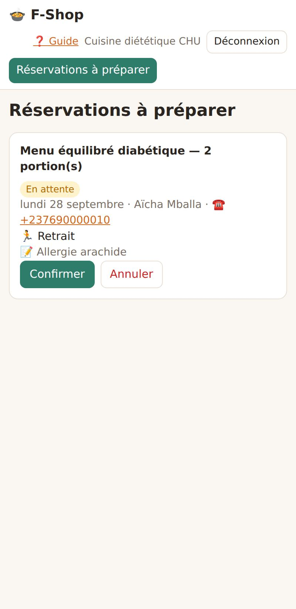
Questions fréquentes
- « Impossible de récupérer votre position » : que faire ?
- Autorisez la localisation pour ce site dans votre navigateur et activez le GPS du téléphone. Vous pouvez aussi toucher la carte pour placer le point à la main, ou écrire l'adresse et un repère.
- Je ne reçois pas mes rappels de repas.
- Activez les notifications dans « Mon suivi santé » et gardez l'application ouverte, même en arrière-plan. Les rappels quand l'application est fermée font partie des prochaines évolutions.
- Un plat n'apparaît pas chez les clients.
- Vérifiez dans « Menu du jour » qu'il est coché pour la bonne date et que ses portions ne sont pas épuisées (colonne « Reste »).
- Comment le client paie-t-il ?
- Pour l'instant, le paiement se fait directement avec la vendeuse (espèces ou mobile money). Le paiement Orange Money / MTN MoMo dans l'application est prévu.
- J'ai oublié mon mot de passe.
- Contactez l'administrateur de la plateforme. La réinitialisation autonome arrive avec l'espace administrateur.
Bientôt disponible
Ces fonctions sont validées et en cours de réalisation, dans cet ordre.
Création et gestion des comptes (cuisiniers, nutritionnistes, clients, vendeuses), désactivation, réinitialisation des mots de passe.
Le patient choisit un créneau libre dans l'agenda du nutritionniste, qui l'accepte en un clic.
Fiche santé, mesures (poids, glycémie, tension) avec courbes, et tout l'historique du suivi.